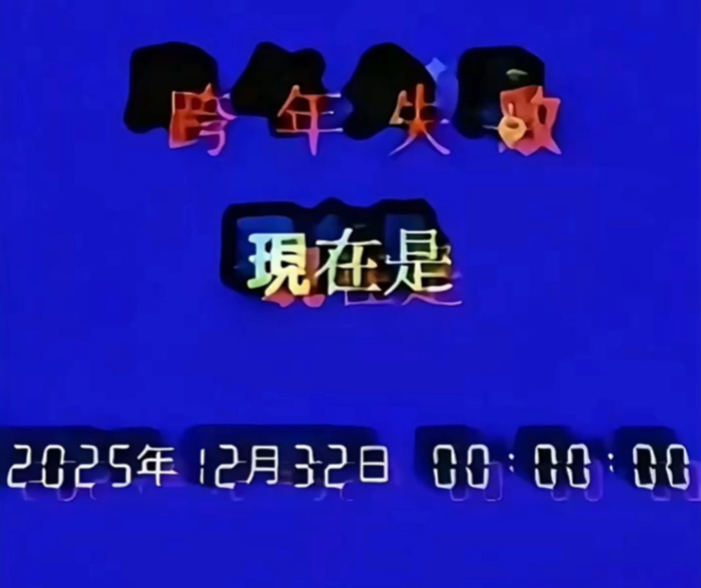

生存难度：生存难度：
等级 等級
- ${one}
- ${two}
- ${three}
Level 706 是后室的第707个层级。
描述

Level 706并非一个场所，而是一种状态。从外部观测，它呈现为“没有任何生物的前厅”——一个被彻底清空、寂静、所有装饰都停滞在跨年前最后一秒的世界。彩带悬停在空中，灯光凝固，倒计时数字永远定格，但没有任何人影。这里没有节日参与者，没有庆祝者，连尸体都没有。
然而这层表象只是幻觉。实际上，Level 706在可观测的物理与空间意义上完全不存在。它并非一片虚空或黑暗，而是彻底缺乏构成“场所”这一概念的基础要素——没有维度，没有时间流逝，没有物质与能量，甚至连“空无一物”的“空”这一状态都未曾被定义。其呈现出的“前厅”景象，不过是观测者认知系统为理解“不存在”而强行生成的安慰剂影像。
根据M.E.G.异常现象研究部（ARP）的假说，Level 706是Backrooms系统处理“未实现事件”或“逻辑悖论”时产生的“错误代码”。其成因与现象 Phenomenon 34密切相关。当多个层级因同步跨年庆祝活动而短暂共享一个高度仪式化的“时刻焦点”时，若该集体性时间期待因现象 Phenomenon 34引发的全局性时间断裂而彻底失败——即新年钟声从未敲响，过渡时刻被完全抹除——这一系统性故障的“负反馈”便在层级列表中固化为了Level 706。
进入或感知该层级的尝试均会引发严重的认知失调。仪器读数归零或显示乱码，并非因为测量到了“零值”，而是测量行为本身失去了对象。处于“入口”临界状态的流浪者会陷入一种时间停滞的循环，反复经历跨年前最后一秒的极致期待，却永远无法抵达终点。这种“永恒的未完成”状态会迅速耗尽其心理时间感，最终可能导致其存在状态变得稀薄。
重要提示：在Level 706的“前厅”景象中，如果遇见任何类人生物（除自己以外），那一定不是人类。这些存在是现象 Phenomenon 34的时间残骸在层级中的投影，或是更古老的、早已不再属于人类的什么东西。不要靠近，不要对话，不要承认它们存在。它们正在等待跨年，已经等了很久，还会继续等下去。
该层级不具备任何形式的资源、地形、光照或声音。任何关于生存的讨论在此都毫无意义，因为“存在”本身即是需要被质疑的前提。
基地、前哨和社区
没有已知的据点与前哨站。
入口和出口
入口
注：以下入口均基于理论推测及边缘案例报告，成功率极低且不可复现。出口
由于该层级无实质存在，所谓“出口”实为将自身存在重新锚定于其他现实的过程。